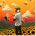
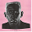
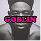
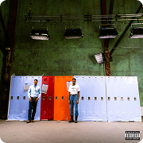
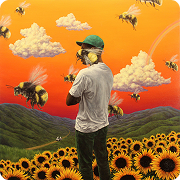
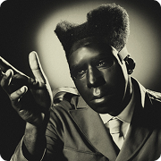
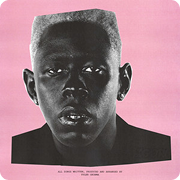
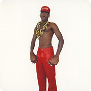
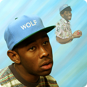
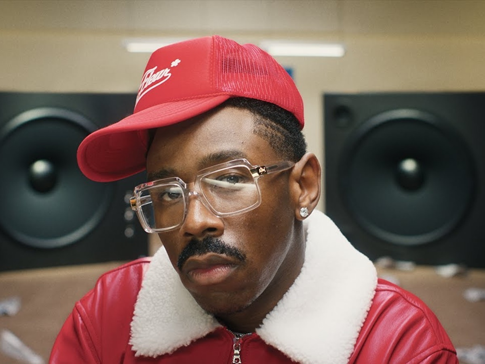

Tyler, The Creator
Ouvintes mensais
38.438.333
avaliações
21.719.695
Músicas populares
01


See You Again (feat. Kali Uchis)
Tyler, The Creator
3.130.203.923
3:00


02
Like Him (feat. Lola Young)
Tyler, The Creator
841.934.342
4:38
03

ARE WE STILL FRIENDS?
Tyler, The Creator
955.190.905
4:25
04

She
Tyler, The Creator
831.102.258
4:13
05
Sugar On My Tongue
Tyler, The Creator
418.583.927
2:23
06
EARFQUAKE
Tyler, The Creator
1.363.812.448
3:10
07
Sticky (feat. GloRilla, Sexyy Red & Lil Wayne)
Tyler, The Creator
550.712.715
4:15
08
Look Like My Mama (com AZ Chike)
Tyler, The Creator
7.894.116
3:16
09
NEW MAGIC WAND
Tyler, The Creator
920.991.639
3:15
10
BEST INTEREST
Tyler, The Creator
837.180.188
2:07
Lançamentos populares

2026 . Single

2017 . Álbum

2024 . Álbum

2019 . Álbum

2025 . Álbum

2013 . Álbum
Em turnê
nov.
14
Los Angeles
axs
sáb., 12:00 • Dodger Stadium
Sobre

Ouvintes mensais
38.438.333
#138
no mundo
Últimas avaliações

Patrick

"Look Like My Mama" é um som muito divertido e cheio de energia, onde a química entre o AZ Chike e o Tyler, the Creator funciona super bem. A batida gruda na cabeça e o clipe é criativo demais, sendo aquela música perfeita para animar qualquer momento.
Look Like My Mama (com AZ Chike)
Tyler, The Creator
3:16
Patrick
"Ring Ring Ring" é um R&B melancólico e elegante que traz um sample nostálgico de Ray Parker Jr. para embalar a saudade após o fim de um relacionamento. A faixa brilha no álbum Don't Tap the Glass (2025) com um clima envolvente de ligações perdidas e sentimentos mal resolvidos.
Ring Ring Ring
Tyler, The Creator
3:21